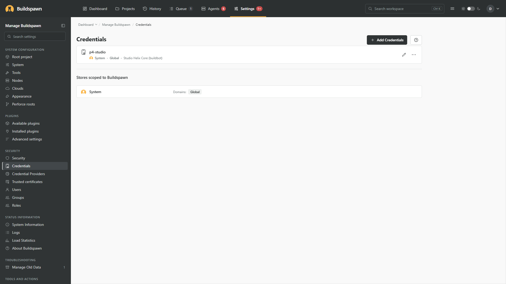

Credentials
Stored logins, keys, tokens and certificates that builds use without ever holding the secret.
When to use credentials
Use a credential whenever a build needs a password, key, token, certificate or account. A credential is stored encrypted. A step names it by its ID and never holds the secret itself. Buildspawn looks the secret up when the build runs, with the rights of the person or trigger that started it, and masks it in the log.
How to add a credential
- Open the project and go to its Credentials. For the whole server, open Manage Buildspawn › Credentials.
- Click Add credentials.
- Choose the Kind (the sections below) and fill in its fields.
- Type an ID that you will remember, such as
steam-build. - Click Save.

Fields every kind has
| Field | What it does | Default | Example |
|---|---|---|---|
| Kind | The type of credential. Pick one of the types on this page. | First in the list | Secret text |
| Scope | Global (builds and connections can use it) or System (only the server itself). | Global | Global |
| ID | The name that steps use to find the credential. Leave it empty to get a random one. You cannot change it later. | A random ID | steam-build |
| Description | A note for people. | Empty | Upload key for the Skyforge store page |
The kinds
There are nine kinds: Username with password, Secret text, Secret file, SSH Username with private key, Certificate, Perforce Password Credential, Perforce Ticket Credential, Steam build account and Epic Games Store.
Username with password
A user name and a password for a web service, a package feed or a share.
| Field | What it does |
|---|---|
| Username | The account name. |
| Treat username as secret | Masks the user name in the log too. |
| Password | The password. Stored encrypted. |
Use it in a step
Where a runner field asks for a credential, type the ID. For other tools, add the build feature Use secret text(s) or file(s) and a binding: Username and password (separated) sets one variable for the name and one for the password. Username and password (conjoined) sets one variable to name:password. Then read the variables.
# PowerShell, after a binding with USER and PASS
curl.exe -u "$($env:USER):$($env:PASS)" https://packages.example.com/uploadSecret text
One secret string, such as an API key or a token.
| Field | What it does |
|---|---|
| Secret | The text. Stored encrypted. |
Use it in a step
Add a Use secret text(s) or file(s) binding of kind Secret text and name the environment variable. Runner fields that need a key, such as a NuGet API key, take the credential ID.
# Batch, after a binding named STORE_TOKEN
upload-tool --token "%STORE_TOKEN%"Secret file
A file that must stay secret, such as a signing key file or a service account file.
| Field | What it does |
|---|---|
| File | Choose the file to upload. |
| Replace | When you edit: tick it to upload another file. The Filename shows the current one. |
Use it in a step
Bind it with Secret file (a variable holds the temporary path of a copy, which is deleted when the build ends) or Secret ZIP file (the file is unpacked into a temporary folder).
$env:SIGNING_KEY_FILE # path of the temporary copySSH Username with private key
A user name and private key for SSH or Git over SSH.
| Field | What it does |
|---|---|
| Username | The account name. |
| Treat username as secret | Masks the name in the log. |
| Private Key | Choose Enter directly and paste the key. |
| Passphrase | The passphrase of the key, if it has one. |
Use it in a step
A Git root takes the credential ID. For scripts, use the binding SSH User Private Key: it sets a variable to the temporary key file path, and optionally variables for the user name and passphrase.
ssh -i "$KEY_FILE" $SSH_USER@build-store.example.comCertificate
A certificate and its private key, for code signing.
| Field | What it does |
|---|---|
| Certificate | Choose Upload PKCS#12 certificate and key (upload the file) or PEM encoded certificate and key (paste the Certificates and the Private key). |
| Password | The password of the keystore. A short or empty password gets a warning. |
Use it in a step
Use the binding Certificate: it sets a variable to the temporary keystore path, one to the password and one to the alias.
signtool sign /f "%KEYSTORE%" /p "%KEYSTORE_PASS%" Game.exePerforce Password Credential
A Perforce server and user with a password.
| Field | What it does |
|---|---|
| P4Port | The server, like perforce:1666. |
| SSL connection / Trust | Tick it for an ssl: server. Trust is the fingerprint of a server with a self-signed certificate. Use Test Connection to see it. |
| Username | The Perforce user. |
| Password | The password. |
| Advanced › All Hosts | The ticket works from any machine. |
| Retry | How many times to try a task again. 0 means once. |
| Tick interval (ms) | Prints a waiting message to the log after this time. 0 turns it off. |
| RPC_SOCKET_SO_TIMEOUT_NICK | Socket timeout in ms. 0 turns it off. |
| P4HOST | The host name Perforce should see. |
| Enable user session / Minimum session life | Caches the user name and ticket so the login check runs less often. |
| Test Connection | Checks the settings. |
Use it in a step
Pick it in the Credential field of a Perforce root. A build with a Perforce root also gets P4_PORT, P4_USER, P4_CLIENT and P4_TICKET in its steps. See Perforce.
p4 -p $env:P4_PORT -u $env:P4_USER -c $env:P4_CLIENT -P $env:P4_TICKET changes -m1 //...Perforce Ticket Credential
A Perforce server and user with a login ticket.
| Field | What it does |
|---|---|
| P4Port, SSL connection, Trust, Username | As for the password credential. |
| Login with ticket value / Ticket | Paste a ticket. Make one with p4 -u build -p perforce:1666 login -ap. |
| Use P4TICKETS file | Give the full path of a tickets file instead, such as C:\Users\build\p4tickets.txt. |
| Advanced | Retry, Tick interval, timeout, P4HOST and user session, as for the password credential. |
| Test Connection | Checks the settings. |
Use it in a step
Use it like the password credential, in the Credential field of a Perforce root.
Steam build account
An account for SteamCMD, with three Steam Guard modes. The fields and the sign-in are described in Steam build account. Pick its ID in the Steam steps.
Epic Games Store
The BuildPatch Tool credentials for your Epic Games Store product.
| Field | What it does |
|---|---|
| BuildPatch Tool client ID | From the Developer Portal: your product, Product Settings, BPT credentials. Not the keys of the Epic Online Services SDK. |
| BuildPatch Tool client secret | Kept encrypted and never shown. It reaches BuildPatch Tool only through an environment variable of that one process. |
| Organization ID | Developer Portal: Organization, Settings, General Settings. |
| Product ID | Developer Portal: Product Settings, SDK Download and Credentials, EOS SDK Credentials. |
| Default artifact ID | The artifact to upload to. A step can name another. |
| Sandbox ID | The sandbox that Label steps use unless the step names one. Empty means the public sandbox. |
| Used for | A note for people. Not enforced. |
| Publishing | Labels set by builds (Label and Unlabel steps run BuildPatch Tool) or Self-service (labels are set in the Developer Portal and the steps do nothing). |
| Test access | Pick an agent and a BuildPatch Tool program and click Test access. It reads the binaries of the artifact and changes nothing. |
Use it in a step
Pick the credential ID in the Epic Games Store steps. Use a dedicated build user on the agent: a process of the same user can read the environment of the tool.
A worked example
Skyforge needs a store token and a signing certificate. Add a Secret text with ID store-token and a Certificate with ID win-signing. In the build configuration add the feature Use secret text(s) or file(s) with two bindings. A PowerShell step reads $env:STORE_TOKEN and signs with $env:KEYSTORE.
What you see when it runs
The log never shows the secret. If a script prints it, the log shows dots. A binding's temporary files are deleted when the build ends.
Problems and fixes
| Problem | What to do |
|---|---|
| A step says the credential does not exist, or the build configuration may not use it | Add it to the project of the build configuration, or to the server credentials. |
| A binding shows no kinds to pick | Add the credential first, then edit the binding. |
| Two builds on one agent can read each other's secrets | A secret in an environment variable is visible to other processes on the same machine. Use a dedicated build user, or one executor. |
| The ID cannot be changed | Create a new credential with the ID you want and update the steps. |